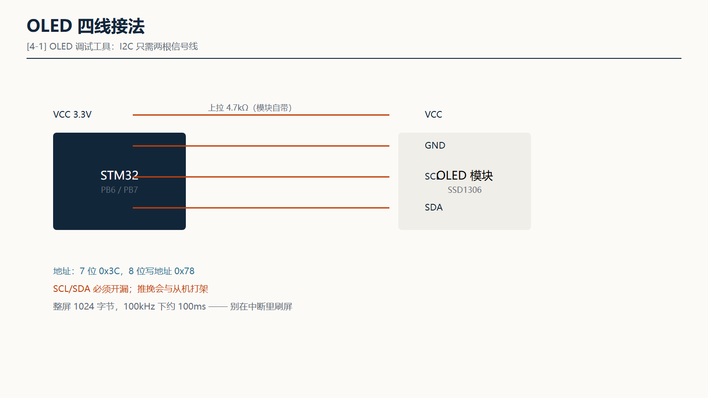

课程时长：约 14 分钟 | 深度版 | 配套结构图与看图理解
调试手段的升级。串口打印要占用一个 USART 和电脑端软件，OLED 不占串口、不依赖电脑，是现场调试最实用的工具。
这一节的重点不是“会调用显示函数”，而是“知道什么时候该用它、什么时候该用串口/调试器”。
说明 OLED 相对串口打印的优势与局限
完成四线接线并确认地址
掌握六个显示函数的参数含义
估算刷新耗时

图 6 OLED 四线接法：SCL/SDA 开漏 + 上拉，地址 0x3C
四根线里只有两根是信号：SCL 由主机打拍子，SDA 传数据，二者都是开漏，靠上拉电阻把电平拉高。
写操作时主机先发 7 位地址 + 写位，从机回 ACK，再发命令/数据。图下方两个数字要记住：地址 0x3C（7 位）、整屏 1024 字节——后者决定刷新一次要多久。
| 方式 | 占用 | 优点 | 缺点 |
|---|---|---|---|
| 串口打印 | USART + USB-TTL + 电脑 | 信息量大、可记录 | 现场无电脑不可用 |
| OLED 显示 | 两根 I2C 线 | 脱机可见、直观 | 屏幕小、信息有限 |
| 调试器断点 | ST-Link | 可看全部变量 | 会暂停程序，破坏时序 |
四线：VCC(3.3V)、GND、SCL、SDA
常见引脚：PB6/PB7 或 PB8/PB9（也是硬件 I2C1 的复用脚）
7 位地址通常 0x3C，8 位写地址 0x78
模块自带 4.7kΩ 上拉；自己搭电路别忘上拉
| 函数 | 参数 | 说明 |
|---|---|---|
| OLED_ShowChar | 行, 列, 字符 | 行 1–4，列 1–16（8×16 字体） |
| OLED_ShowString | 行, 列, 字符串 | 超列宽会换行或截断 |
| OLED_ShowNum | 行, 列, 数字, 长度 | 长度决定几位，不足补 0 |
| OLED_ShowSignedNum | 行, 列, 数字, 长度 | 支持负数 |
| OLED_ShowHexNum | 行, 列, 数字, 长度 | 十六进制 |
| OLED_ShowBinNum | 行, 列, 数字, 长度 | 二进制，C 无二进制字面量 |
| OLED_Clear | 无 | 整屏写 0 |
整屏 128×64 位 = 1024 字节，每字节 9 个时钟（8 数据 + 1 应答）。100kHz 下约 92ms，400kHz 下约 23ms。
所以不要在 1ms 中断里刷屏，也不要每轮循环全刷——按需刷新或局部刷新。
| 速率 | 整屏时间 | 适合 |
|---|---|---|
| 100kHz | 约 92ms | 静态信息 |
| 400kHz | 约 23ms | 每秒几次的刷新 |
| 局部刷新 | 几 ms | 动态数值 |
把 OLED.c / OLED.h / OLED_Font.h 加进 User 组
改 OLED.c 里的 SCL/SDA 引脚宏，与你的接线一致
初始化后延时 100ms 再 OLED_Init，等屏幕上电稳定
I2C 用两根线的原因是“地址寻址”：所有从机共享总线，靠 7 位地址选中；SPI 靠片选，每多一个从机多一根线。引脚紧张时 I2C 更划算。
OLED 选 I2C 而不是 SPI，是因为刷新频率要求不高、引脚更省；如果要高帧率，SPI 版明显更快。
例：整屏 1024 字节，每字节 9 位（8 数据 + 1 应答）。100kHz 下 1024×9/100k≈92ms；400kHz 下≈23ms。
局部刷新 16 字节：100kHz 下约 1.4ms，可以做每秒几十次的动态数值。
| 错误写法 | 后果 | 正确做法 |
|---|---|---|
| 地址写成 0x78 当 7 位用 | 通信失败 | 7 位用 0x3C，8 位用 0x78 |
| 没有上拉电阻 | SDA 拉不高 | 加 4.7k 上拉 |
| 在中断里刷屏 | 阻塞其他中断 | 主循环按需刷新 |
| 初始化后立即发命令 | 偶发不显示 | 延时 100ms 再初始化 |
I2C 为什么只需要两根线：它是地址寻址总线，所有从机挂在同一对线上，靠 7 位地址区分；SPI 靠片选线区分，每多一个从机就多一根 CS。
刷新为什么慢：I2C 是串行总线，一屏 1024 字节要一位一位传，还要等每个字节的 ACK。想快只能提高速率或减少刷新面积。
逻辑分析仪解码 I2C，确认地址、命令、数据时序
示波器看第 9 个时钟的 ACK 是否被从机拉低
把刷新周期从 10ms 改到 500ms，观察闪烁变化
| 现象 | 原因 | 解决 |
|---|---|---|
| 屏幕不亮 | 供电或线序错 | 先量 VCC/GND |
| 有背光无内容 | 地址错或初始化失败 | 确认 0x3C/0x78 |
| 显示乱码 | 字模方向不匹配 | 按驱动重新取模 |
| 显示闪烁 | 刷新太频繁 | 降频或局部刷新 |
Q1. OLED 相对串口的最大优势？
A：不占串口、不依赖电脑，脱机可见。
Q2. 0x3C 与 0x78 的关系？
A：7 位地址与左移一位后的 8 位写地址。
Q3. 为什么开漏必须上拉？
A：开漏只能拉低，高电平靠上拉。
Q4. 整屏刷新多久？
A：100kHz 约 92ms。
Q5. 什么时候不该用 OLED？
A：需要大量日志、需要事后回看时。
Q6. 引脚为什么选 PB6/PB7？
A：也是硬件 I2C1 的复用脚，方便以后切换。
Q7. 为什么 OLED 模块自带的上拉够用？
A：4.7k 在 100–400kHz 下满足上升时间要求。
Q8. 怎么判断屏幕是否在线？
A：读地址后看是否收到 ACK。
1. OLED 的四根线是什么？
答：VCC、GND、SCL、SDA。
2. 显示函数第二个参数是什么？
答：列号。
3. 为什么初始化后要延时？
答：等屏幕上电稳定。
4. 刷新太快的后果？
答：闪烁、拖慢主循环。
☐ 四线接对
☐ 地址确认
☐ 六个函数会用
☐ 知道刷新耗时